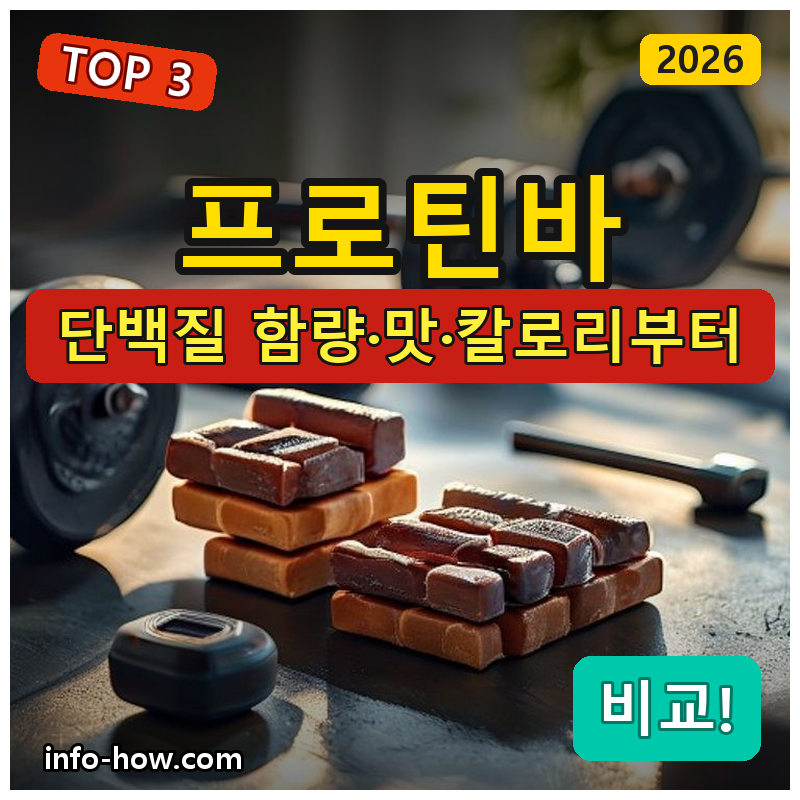
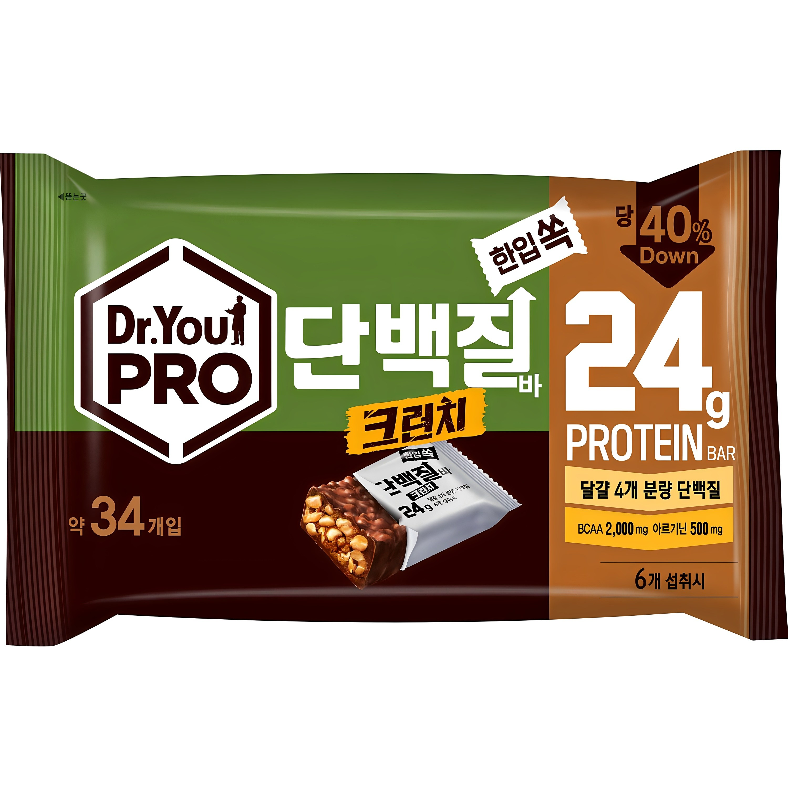
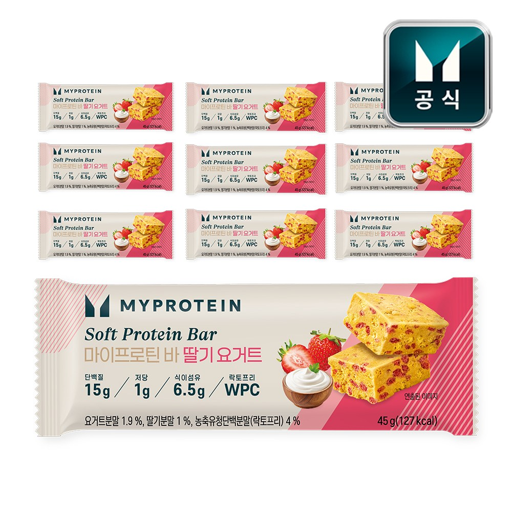
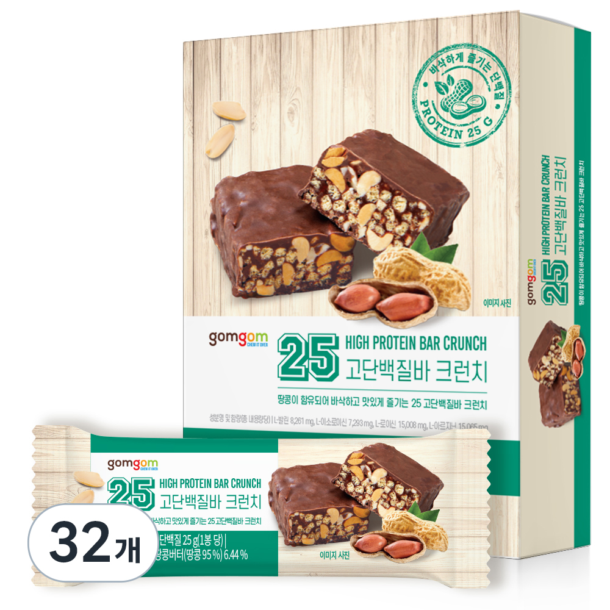

홈 › 제품리뷰 › 식품/먹거리
프로틴바, 가성비 크런치냐 소프트 맛이냐
작성: 생활서식 모음 · 2026-07-22

파트너스 활동의 일환으로 일정액의 수수료를 지급받습니다
🛒 오늘의 쿠팡 특가 보러가기 →
프로틴바, 종류가 많아 뭘 살지 막막하죠?
핵심은 "단백질 함량과 맛, 칼로리" 3대 를※ 프로틴바는 단백질 보충 간식이며, 식사 대체·질병 치료 목적이 아닙니다.
📋 목차
프로틴바, 가성비 크런치냐 소프트 맛이냐 — 결론 먼저 스펙 비교표: 한눈에 보기 프로틴바 고를 때 봐야 할 4가지 간식이냐 고단백이냐, 뭘 사야 할까? 자주 묻는 질문 (FAQ) 결론: 한 줄 요약
프로틴바, 가성비 크런치냐 소프트 맛이냐 — 결론 먼저
프로틴바는 "맛으로 꾸준히냐, 단백질 함량이냐" 로 갈려요.마이프로틴 소프트 처럼 부드럽고 맛 좋은 제품이 무난합니다. 저렴하게 간식으로면 한입 가성비, 단백질을 확실히 챙기려면 고단백입니다.
1 간식·가성비 (가성비 초이스)
가성비

한입 34p 가성비
1. 닥터유 프로단백질바 크런치 한입 34p
한입 크기 34개 대용량 크런치 식감 간식·가성비
고단백 전문은 아니어도
추천 대상
출출할 때 한입씩 먹는 간식으로 저렴하게 대용량으로 상비하려는 분 크런치 식감을 좋아하는 분 장점
한입 크기 34개라 사무실·가방에 상비하기 좋음 크런치 식감으로 간식처럼 부담 없이 대용량이라 개당 단가가 저렴한 편 단점
한입 크기라 1개당 단백질 함량은 고단백 전문 바보다 낮음 이 제품은 간식·가성비용 입니다. 맛으로 꾸준히면 2번 소프트, 단백질 확실히면 3번 고단백으로 가세요. "한입 간식"이면 가성비 최고예요.
한줄 리뷰
"출출할 때 한입씩, 저렴하게"면 34개 대용량이 알뜰합니다. 크런치라 간식 느낌이에요. 확실한 단백질·부드러운 맛이면 2·3번을 보세요.
주요 스펙
제품: 닥터유 프로단백질바 크런치 한입 34p 구성: 한입 크기 34개 용도: 간식·단백질 보충 배송: 로켓배송 가격: 약 12,140원 (변동 가능) ※ 실제 스펙·가격과 차이가 있을 수 있습니다
2 맛·다이어트 (베스트 초이스)
베스트

소프트 맛·음용성
2. 마이프로틴 소프트 단백질 바
부드러운 소프트 식감 맛있어 꾸준히 단백질 보충 간식
"맛없어 못 먹는" 실패를 막는
추천 대상
맛있어서 꾸준히 먹고 싶은 분 딱딱한 프로틴바가 부담스러운 분 다이어트 간식으로 단백질을 챙기는 분 장점
부드러운 소프트 식감이라 딱딱한 바보다 먹기 편함 맛(딸기 요거트 등)이 좋아 꾸준히 먹기 쉬움 다이어트 중 단백질 보충 간식으로 적합 단점
맛·부드러움 위주라 1개 단백질 함량은 고단백 전문보다 낮을 수 있음 저렴하게 간식이면 1번, 단백질 확실히면 3번 고단백입니다. 2번은 "맛+부드러움" 의 실속 구간 — 꾸준히 먹는 게 중요한 분에게 무난합니다.
한줄 리뷰
"프로틴바가 딱딱하고 맛없어 안 먹게 된다"는 분에게 소프트 바가 맞습니다. 맛있어서 꾸준해요. 단백질 함량을 극대화하려면 3번을 보세요.
주요 스펙
제품: 마이프로틴 소프트 단백질 바 (딸기 요거트) 식감: 소프트(부드러움) 용도: 맛·다이어트 간식 배송: 로켓배송 가격: 약 29,700원 (변동 가능) ※ 실제 스펙·가격과 차이가 있을 수 있습니다
3 고단백·운동 (프리미엄)
프리미엄

고단백 25g급
3. 곰곰 25 고단백질바 크런치
1개 고단백(25g급) 운동 후 보충 크런치 든든
1개로 단백질을 확실히
추천 대상
운동 후 단백질을 확실히 챙기는 분 1개로 든든한 단백질 보충을 원하는 분 단백질 함량을 우선하는 분 장점
1개당 단백질 함량이 높아(25g급) 운동 후 보충에 유리 크런치 식감으로 든든하게 한 개로 충분 단백질을 확실히 챙기려는 목적에 적합 단점
고단백이라 개당 칼로리·가격이 간식용보다 높을 수 있음 한입 간식이면 1번, 맛·부드러움이면 2번이 합리적입니다. 3번은 운동 후 단백질을 확실히 챙기려는 분에게 값어치가 있습니다.
한줄 리뷰
"운동하고 단백질을 제대로"면 1개 고단백 바가 든든합니다. 함량이 높아요. 가벼운 간식·맛이면 1·2번이 합리적입니다.
주요 스펙
제품: 곰곰 25 고단백질바 크런치 단백질: 1개 고단백(약 25g급) 용도: 운동 후 단백질 보충 배송: 로켓배송 가격: 약 41,640원 (변동 가능) ※ 실제 스펙·가격과 차이가 있을 수 있습니다
스펙 비교표: 한눈에 보기
가격·풍량·무게 중 본인에게 중요한 기준부터 보세요. "최고" 표시는 3제품 중 객관적 1위 값입니다.
← 좌우로 스크롤 →
프로틴바 고를 때 봐야 할 4가지
함량·맛·칼로리만 봐도 "맛없어 방치·당만 높음" 실패를 막습니다.
1) 단백질 함량 — 목적에 맞게
운동 보충: 1개 단백질 함량이 높은 고단백간식·가벼운 보충: 한입·소량으로 충분영양성분표에서 1개당 단백질(g)을 확인 2) 맛·식감 — 꾸준함
맛없으면 안 먹게 되므로 꾸준함이 중요 소프트: 부드러워 먹기 편함크런치: 든든한 식감, 취향 차이3) 칼로리·당 — 다이어트면 특히
단백질만 보지 말고 당·칼로리 도 확인 다이어트 간식이면 당·열량이 낮은 제품 단백질 대비 당이 높으면 다이어트엔 불리 4) 성분·알레르기 — 확인
유청(우유)·견과·대두 등 알레르기 유발물질 확인 인공감미료 등 성분 취향도 고려 식단 목적(증량/감량)에 맞는지 영양성분표 확인 간식이냐 고단백이냐, 뭘 사야 할까?
목적과 맛 취향만 정하면 답이 나옵니다.
한입·간식·저렴: 1번 닥터유 34p → 1만원대맛·다이어트: 2번 마이프로틴 소프트 → 꾸준히고단백·운동: 3번 곰곰 25 → 확실히자주 묻는 질문 (FAQ)
Q1. 프로틴바로 식사를 대체해도 되나요? 가끔 간편식으로는 쓸 수 있지만 상시 식사 대체는 권하지 않습니다. 프로틴바는 단백질 보충 간식이라 한 끼에 필요한 다양한 영양소를 온전히 담지는 못합니다. 바쁠 때 임시로 한 끼를 때우는 정도는 괜찮지만, 매 끼를 프로틴바로 대체하면 영양 불균형이 생길 수 있습니다. 식사는 균형 잡힌 음식으로 하고, 프로틴바는 부족한 단백질을 보충하는 용도로 쓰세요.
Q2. 다이어트 중인데 프로틴바 먹어도 되나요? 당·칼로리가 낮은 제품을 고르면 도움이 됩니다. 다이어트 중 단백질은 근육 유지에 중요하고 포만감도 주어, 단 과자 대신 프로틴바를 간식으로 먹으면 유리합니다. 다만 일부 프로틴바는 단백질 못지않게 당·칼로리가 높으니, 영양성분표에서 당·열량을 확인하고 낮은 제품을 고르세요. 어디까지나 총 섭취 열량 관리가 우선입니다.
Q3. 단백질 함량은 몇 g이 적당한가요? 목적에 따라 다릅니다. 가벼운 간식·보충이면 한입 바로 충분하고, 운동 후 확실한 보충을 원하면 1개당 단백질이 높은(20g 안팎 이상) 고단백 바가 유리합니다. 하루 총 단백질 섭취량 관점에서 식사로 부족한 만큼 보충한다고 생각하면 됩니다. 무조건 높은 것보다 내 식단에서 부족한 양에 맞추는 게 합리적입니다.
Q4. 프로틴바가 딱딱한데 부드러운 건 없나요? 소프트 타입 프로틴바가 있습니다. 크런치·바 타입은 든든하지만 딱딱하게 느껴질 수 있는데, 소프트 타입(마이프로틴 소프트 등)은 부드러운 식감이라 먹기 편하고 꾸준히 먹기 좋습니다. 딱딱함이 부담스러우면 소프트 타입을 고르고, 든든한 식감을 선호하면 크런치 타입을 고르세요. 꾸준히 먹으려면 본인 입맛에 맞는 식감이 중요합니다.
Q5. 프로틴바에 알레르기 성분이 있나요? 제품에 따라 있을 수 있어 확인이 필요합니다. 프로틴바는 유청(우유), 견과류, 대두 등이 들어가거나 같은 설비에서 처리돼 교차오염 가능성이 있습니다. 우유·견과·대두 알레르기가 있다면 성분표와 알레르기 유발물질 표시를 반드시 확인하세요. 인공감미료 등 특정 성분에 민감하다면 그 부분도 함께 보고, 의심되면 섭취를 피하세요.
결론: 한 줄 요약
1) 닥터유 한입 34p — 약 12,140원 / 한입·간식. 대용량 상비, 크런치 가성비.2) 마이프로틴 소프트 — 약 29,700원 / 맛·다이어트. 부드러워 꾸준히.3) 곰곰 25 고단백질바 — 약 41,640원 / 고단백·운동. 1개로 단백질 확실히.이 포스팅은 쿠팡 파트너스 활동의 일환으로, 이에 따른 일정액의 수수료를 제공받습니다.